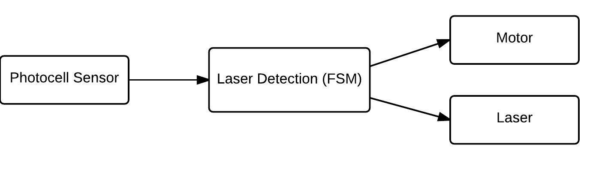
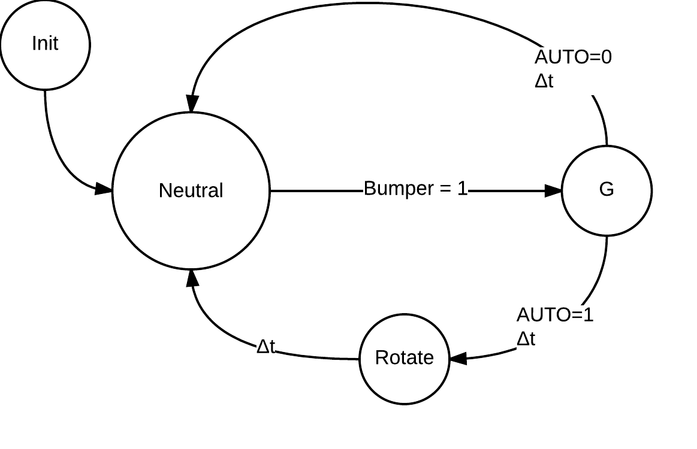

Project 3
Contents
Introduction
The goal of project 3 is to use the sensors and actuators from project 1, the real time operating system (RTOS) from project 2, and an iRobot Roomba to create a semi-autonomous laser tank capable of battling other tanks. The Roomba will be controllable through a joystick and a pushbutton for the laser. It can roam and avoid obstacles and virtual walls on its own in autonomous mode. There is also a light-sensing target on the Roomba that detects when it has been shot, in which in case it will remain stationary as if it has been destroyed.
Hardware
iRobot Roomba Create 2
The iRobot Roomba Create 2 is a mobile programmable robot that allows sounds, movements, and additional sensors and actuators to be added and customized.
Design
This section talks about the system design from a high level perspective using block diagrams, finite state machines, and the subsumption architecture.
System Architecture
Base Station
The base station is connected to bluetooth, and two joysticks. Bluetooth provides bi-directional communication and is used to communicate with the remote station over UART. One of the joysticks is used to control the Roomba, with its pushbutton to fire the laser. The second joystick is purely used for the pushbutton to change the state of the remote station between manual and semi-autonomous. This is illustrated in the base station's block diagram:
The remote station is connected to bluetooth, the laser, a photocell array, and the Roomba, which is it mounted on. The laser emits a bright beam when the pin is set high. The photocell is read to obtain a value and determine if it has been shot, and the connection to the Roomba allows the remote station to send the Roomba commands, and receive sensor data back. The block diagram below shows the architecture of the remote station.

Phase 1: Manual Control
Phase 1 is heavily associated with behaviour based robotics. The sensors are used to directly control the actuators.
Laser FireThe Fire FSM takes data from a pushbutton and turns the laser on if the state of the pushbutton is down, or off if the state is up. The following shows the connection of sensors to actuators and the finite state machine (FSM).
PhotocellThe photocell sensor array detects spikes in light to determine if it has been shot. Every 0.5 seconds it will update a threshold value. This threshold value is the amount of light coming from the room plus a little. If this threshold is exceeded, then we can determine that the tank has been shot. Being shot puts the Roomba into a dead state where it can't move or shoot. This is illustrated in the diagrams below.
 Movement
The joystick is used to control the Roomba. The position of the joystick is mapped to nine different states. These states are shown in the diagram below:
These letters then map to commands:
| A | Forward left |
| B | Forward |
| C | Forward right |
| D | Spin counterclockwise |
| E | Spin clockwise |
| F | Backwards left |
| G | Backwards |
| H | Backwards right |
| X | Stop |
 Communication
Communication
The base station needs to communicate with the remote station, and the remote station needs to communicate with both the base station and the Roomba. This is done through UART communication over USB and bluetooth. All stations can send data and receive data. This is shown in the FSM below:
Phase 2: Semi-Autonomous Control
"Semi-Autonomous"Phase 2 introduces subsumption architecture to the project. In this robotics paradigm, sensors may cause the system to have different behaviour based on their state.
Updated MovementThe Movement FSM was updated to include a pushbutton input that toggles the state of AUTO between 1 and 0. In addition to the functionality from Phase 1, the system now only continues forward when AUTO is set to 1. The change can be seen in the following diagrams:
IR-Wall DetectionThe IR-Wall Detection FSM takes Roomba sensor data and sends a movement command if an IR-Wall is detected. The command sent depends on the current movement state, and is generally the reverse of the current movement state. The mapping of current states to movement commands is shown in the table below:
| A | Backwards left |
| B | Backwards |
| C | Backwards right |
| D | Spin clockwise |
| E | Spin counterclockwise |
| F | Forward left |
| G | Forward |
| H | Forward right |
| X | Backwards |
The Obstacle Avoidance FSM takes Roomba sensor data and determines if an obstacle has been hit by the Roomba's front bumpers. If this is the case, the Roomba will drive backwards for 200ms. In addition, if the Roomba is currently in autonomous mode (ie: AUTO = 1), the Roomba will then briefly turn in place. This FSM is shown below:
 Subsumption ArchitectureTask Decomposition
The above functionality is broken down into tasks that will run on the RTOS. Each task has its own scheduling parameters (priority and frequency).
Base Station TasksImplementation
Implementation
Testing
Testing was conducted to evaluate whether the applications behaviour matched the expected criteria. Testing was split into four distinct categories. These categories are manuel control and laser, IR boundary and obstacle avoidance, semi-autonomous, and light detection.
Manual Control and Firing
| Objective: | To test that the joystick movements are correctly mapped, sent over bluetooth, and translated into Roomba drive commands to control the Roomba. |
| Description: | Moving the joystick up and down makes the Roomba go straight forward and straight backwards. Moving the joystick left causes the Roomba to spin counterclockwise, moving right causes the Roomba to spin clockwise. Moving the joystick to the top left corner causes the Roomba to travel forwards and counterclockwise, the top right corner causes it to travel forwards and clockwise, the bottom left causes it to travel backwards and clockwise, and the bottom right to travel backwards and counterclockwise. |
| Results: | As shown in the video below, the Roomba responds quickly and effectively to the expected behaviour |
IR Boundary and Obstacle Avoidance in Manual Mode
| Objective: | This test has two purposes. The first is to make sure the Roomba does not cross any virtual walls by backing up when the wall is detected. The second is to back up when the Roomba runs into an obstacle with the bumper. |
| Description: | When the Roomba runs into an obstacle with the bumper, it will travel straight backwards to back away from the object so that the user can then attempt to avoid the obstacle. The same occurs for the virtual wall. |
| Results: | As shown in the video below, the Roomba backs away when the bumper is hit, or the virtual wall is detected. |
Semi-Autonomous Control
| Objective: | This test has four purposes. The first is to make that the Roomba can switch from manual to semi-autonomous mode and vice versa. The second is to verify that while in semi-autonomous mode, the Roomba travels forward. The third tests that if a virtual wall is detected, the Roomba will backup, turn counterclockwise, and then continue forward. The fourth shows that when an obstacle is hit the roomba backs up, turns counterclockwise, and continues as well. |
| Description: | The video starts by switching from manual mode to semi-autonomous mode. Then the Roomba travels into the virtual wall and turns counterclockwise. Once the Roomba hits the real wall, it also turns clockwise. The video ends by using the button to switch back to manual mode. The virtual wall emitter is enclosed by two red cups in order to emit a more focused beam. |
| Results: | As shown in the video below, the Roomba successfully switches modes, avoids the virtual wall, and bounces off the real wall, and successfully returns to manual mode. |
Light Detection
| Objective: | To test that the light sensor successfully detects a laser and registers it as a hit. |
| Description: | When a laser is shined on the light sensor, the Roomba will play a sound to indicate that it was hit, turn off its laser, stop moving, and be in a dead state. |
| Results: | As shown in the video below, the Roomba successfully stops moving, has its laser off, and can no longer be controlled until it is reset. |
Discussion
Discuss...
Conclusion
A semi-autonomous laser tank was created using the sensors and actuators from project 1, the RTOS from project 2, the ATMega 2560 microcontroller, and the iRobot Roomba Create 2. The tank's movement can be operated manually or autonomously, while the laser is always controlled by the pushbutton on the joystick. The light sensor detects the light of the room using averaging and detects bursts in the light to determine whether it has been hit. This concludes our making of a Roomba laser tank.
References
Code
The code API as generated by Doxygen is available here.
You can download the project 3 source code here.